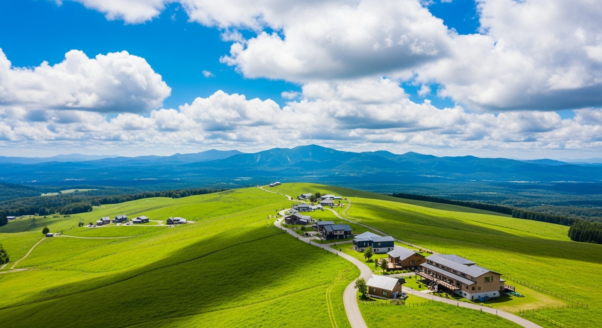

那須高原
標高の高い那須高原で、爽やかなリゾート気分を味わうプラン。動物とふれあったり、おしゃれなカフェを巡ったり、女性やファミリーに大人気です。

【ディープリサーチ・ポイント】
- こんな人におすすめ:
- カップル、女子旅、小さなお子様連れのファミリー
- 動物が好き、おしゃれなカフェや雑貨屋が好き
- のんびり高原リゾートで過ごしたい
- 那須どうぶつ王国： 広大な敷地でカピバラやアルパカなど、たくさんの動物たちとふれあえます。ショーも充実しており、一日中楽しめます。
- 南ヶ丘牧場： 濃厚なソフトクリームや牛乳が絶品。乗馬体験や動物への餌やりも楽しめます。
- 那須ロープウェイで茶臼岳へ： ロープウェイで一気に7合目へ。山頂駅からの景色はまさに絶景！少し歩くだけで、夏でも涼しい高山の空気を感じられます。
- ベーカリー＆レストラン PENNY LANE（ペニーレイン）： ビートルズの世界観あふれる人気のパン屋さん。テラス席でのランチは格別です。
モデルプラン（2泊3日）
- 拠点： 那須高原のホテルやペンション
- 予算目安： 5〜10万円
| 日程 |
プラン |
| 1日目 |
動物とグルメを満喫
・午前: 那須どうぶつ王国で動物たちとふれあい。
・昼食: 園内レストラン or 那須高原のカフェ（チーズガーデンもおすすめ）。
・午後: 南ヶ丘牧場でソフトクリームや乗馬体験。
・夕食・宿泊: 那須高原のホテルやペンションでリラックス。 |
| 2日目 |
絶景とショッピングを楽しむ
・午前: 那須ロープウェイで茶臼岳へ。山頂からの絶景を楽しむ。
・昼食: ベーカリー＆レストラン PENNY LANEでランチ。
・午後: 那須ガーデンアウトレットでショッピング。 |
← トップページに戻る